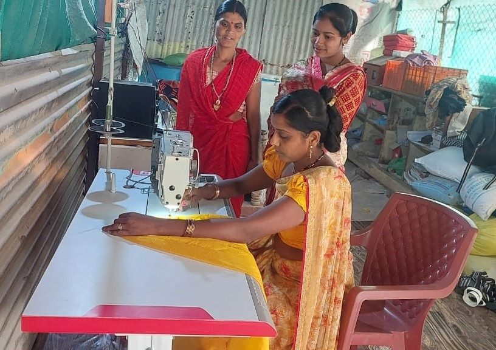

Women Empowerment
Building Bridges of Hope
“Today, I am deeply thankful to the teachers at Stepping Stone Foundation, whose guidance and support helped me become financially self-reliant and stand on my own feet”...says Sunita, one of the beneficiaries of tailoring class.
Sunita, A beneficiary from Nagpur